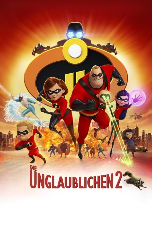

Alternativ: Incredibles 2 gesehen am 03.02.2019
gesehen am 03.02.2019
 
 IMDB-Wertung: 7.9 / 10
IMDB-Wertung: 7.9 / 10  Metascore:
Metascore: 
Allmählich kehrt der Alltag bei den Unglaublichen ein, nachdem sie mit vereinter Familienpower dem Schurken Syndrome das Handwerk gelegt haben. Doch von Ruhe ist keine Rede, denn jetzt muss Mutter Helen Parr es mit dem einen oder anderen Rabauken aufnehmen. Das bedeutet natürlich, dass Vater Bob Zuhause den Kochlöffel schwingen und den Familienalltag mit den drei Kindern Violetta, Flash und Baby Jack-Jack organisieren muss. Doch das ist natürlich leichter gesagt als getan, zumal noch nicht so ganz klar ist, welche außergewöhnlichen Fähigkeiten der kleine Jack-Jack entwickeln wird. Chaos ist also vorprogrammiert! Als ein zwielichtiger Bösewicht auftaucht und die Bürger von Metroville mit einem perfiden Plan bedroht, müssen die Unglaublichen doch wieder in ihre unglaublichen Outfits schlüpfen, um gemeinsam mit Freund Frozone das Schlimmste zu verhindern...
Jahr: 2018
Dauer: 117 Minuten
FSK: 6
Land: USA Studio: Walt Disney Studios Motion PicturesTonspuren: DTS - ,
Untertitel:
Auflösung: 1080p (1920x1080) Größe: 7587 MB
Genre: Action, Sci-Fi, Komödie, Abenteuer, Animation/Trick, Familie
Regisseur: Brad Bird
Drehbuch: Brad Bird
Soundtrack: Michael Giacchino
Darsteller:
 Catherine Keener als Evelyn Deavor
Catherine Keener als Evelyn Deavor Bob Odenkirk als Winston Deavor
Bob Odenkirk als Winston Deavor Samuel L. Jackson als Lucius Best / Frozone
Samuel L. Jackson als Lucius Best / Frozone Phil LaMarr als Krushauer / Helectrix
Phil LaMarr als Krushauer / Helectrix Jonathan Banks als Rick Dicker
Jonathan Banks als Rick Dicker John Ratzenberger als Underminer
John Ratzenberger als Underminer Paul Eiding als Reflux
Paul Eiding als Reflux Barry Bostwick als Mayor
Barry Bostwick als MayorDatei: X:\Kinder Disney HD\Unglaublichen\Unglaublichen 2, Die (2018, FSK6, 1920x1080) 3D.mkv seit 08.11.2018
Festplatte: Kinder-Filme+Trick
 Alle Filme aus Gruppe 'Kinder Disney HD\Unglaublichen'
Alle Filme aus Gruppe 'Kinder Disney HD\Unglaublichen'
(der aktuelle Film)